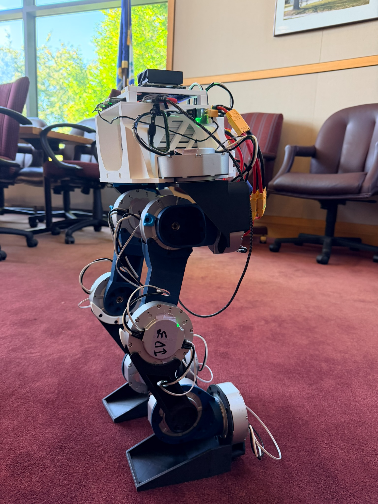
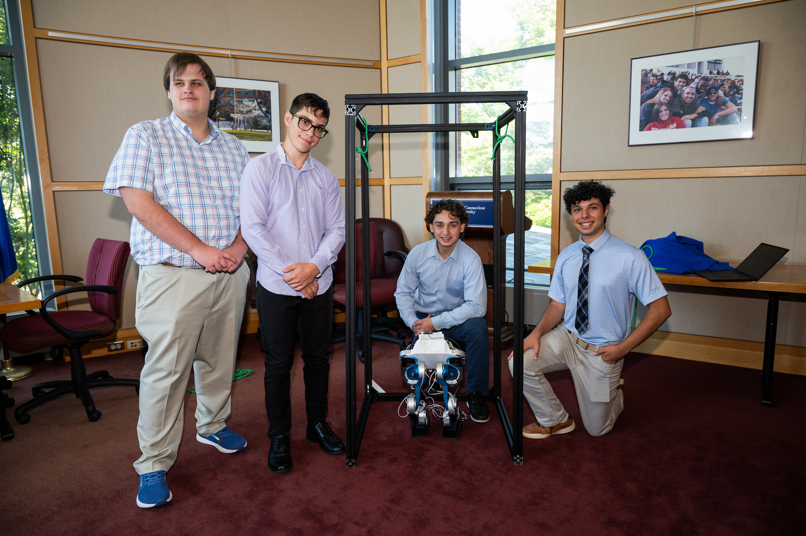
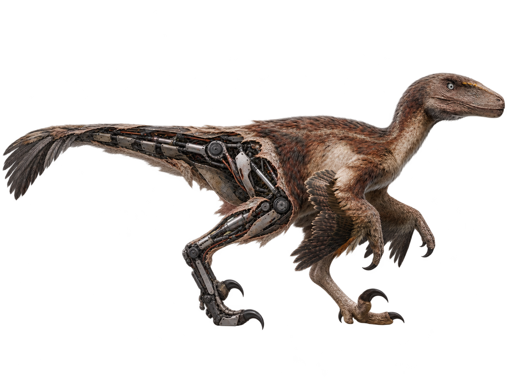
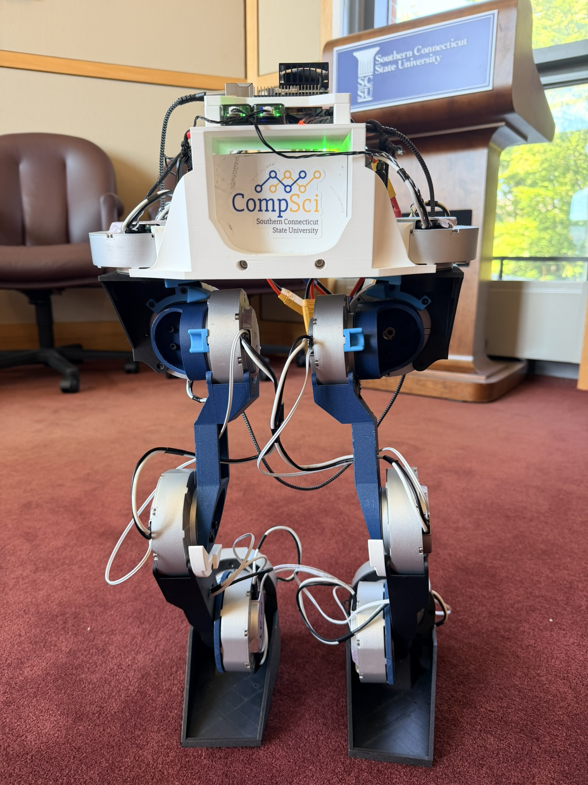
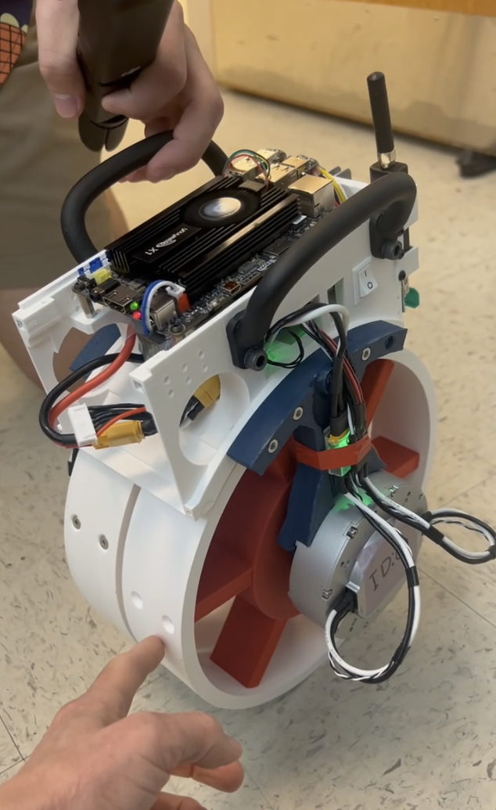

TEAM LEAD
Francesco Thomas
Contact Francesco to learn about the project, join the team, or support our work.
Email Francesco ↗SOUTHERN CONNECTICUT STATE UNIVERSITY
A student team exploring the intersection of robotics, reinforcement learning, and expressive movement.

MEET THE TEAM
We are a student team at Southern Connecticut State University exploring robotics, reinforcement learning, and expressive motion. Together, we turn ideas into designs, experiments, and working hardware.
Get involved with the team ↗TEAM LEAD
Contact Francesco to learn about the project, join the team, or support our work.
Email Francesco ↗
01 — OUR VISION

Our goal is to create an accurate, lifelike recreation of Deinonychus—capturing not just its appearance, but the way it moves, reacts, and interacts with the world around it.
We envision a complete animal: lifelike skin and surface detail, natural movement, and awareness of its surroundings. Through AI and robotics, we aim to create a dinosaur that feels present, responsive, and alive.
Its anatomy and movement will be guided by paleontological evidence and the study of living animals, bringing scientific understanding and creative engineering together.
02 — OUR ROBOTS
Developing the foundations today.
Building toward what comes next.

Our bipedal platform for developing balance, standing control, and expressive poses. Hatchling connects simulation-based learning with testing on real hardware.
Explore the researchConcept visualization — our long-term goal.
Our broader robotic dinosaur project brings together mechanical design, character, and motion. Lessons from Hatchling help inform the path toward this larger build.
Be part of the project03 — RESEARCH & DEVELOPMENT
Learning how machines can move with balance, purpose, and personality.

Using Isaac Lab to train control policies and explore robot behavior before testing on hardware.
Connecting structure, actuators, sensors, and embedded software into a working robotic platform.
Exploring how authored poses and motion references can guide movement with character.
04 — GET INVOLVED
Interested in robotics, design, programming, or storytelling? There’s more than one way to contribute to The Raptor Project.
Francesco Thomas · Team Lead francesco.thomas@icloud.com (203) 895-2757